Limits and Derivatives#
Limits, derivatives, and integration are at the heart of an introductory Calculus sequence. Here we will look at limits and derivatives, integration is covered in the Integration section. These options allow the user to find limits of single variable expressions, take derivatives and higher-order derivatives (including partial derivatives), find derivatives and higher-order derivatives of implicitly defined relations, and a quick tangent line calculator that is helpful when examining these concepts graphically.
Limit#
This option will take the limit of a single variable function. When invoked a dialog will appear asking the user to input the variable to take the limit with respect to, the limit point for the limit, and what direction to take the limit (or two-sided). There is also a variable assumptions selection at the bottom. For more about variable assumptions see the discussion at the bottom of this page. In most cases you will leave the assumptions alone (everything real) but sometimes you may need to change these.
The limit point can be any valid expression, including workspace entries (R1, R2, …) as well as expressions that incorporate them. Also remember that the infinities are denoted as oo and -oo. For a refresher on syntax look over the CLAE Expression Syntax materials.
We will go over a couple examples,
Say we have the expression, \(\displaystyle \frac{- x^{4} + \left(h + x\right)^{4}}{h}\), which is the difference quotient for \(f(x) = x^4\). If we take the limit, use h for the variable, 0 for the limit point, and two-side, we get \(4 x^{3}\).
Along the same lines, say we have the expression, \(\displaystyle \frac{- \sin{\left(x \right)} + \sin{\left(h + x \right)}}{h}\), which is the difference quotient for \(f(x) = \sin(x)\). If we take the limit, use h for the variable, 0 for the limit point, and two-side, we get \(\cos{\left(x \right)}\). This tool may have its limitations but it does handle some fairly impressive algebraic manipulations.
Say we have the expression, \(\frac{1}{x}\),
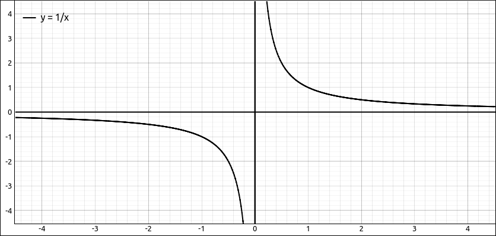
\(y = \frac{1}{x}\)#
the limit as \(x \to 0\) from the left gives us \(-\infty\), from the right gives us \(\infty\), and if we try a two-sided limit we get \(\tilde{\infty}\), which displays as zoo. From the SymPy documentation: zoo represents complex infinity, i.e., the north pole of the Riemann sphere. The reason it is spelled this way is that it is “z-oo”, where “z” is the symbol commonly used for complex variables, and oo is the symbol SymPy uses for real positive infinity.
Another interesting output you may get can be seen with \(\sin{\left(\frac{1}{x} \right)}\),
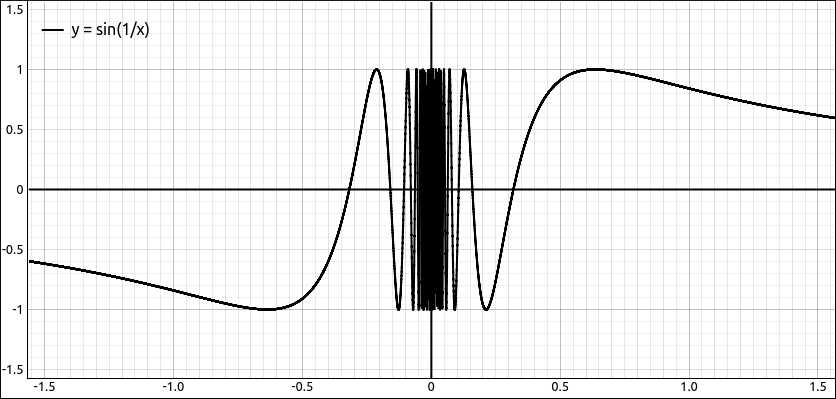
\(y = \sin{\left(\frac{1}{x}\right)}\)#
if we take the limit of this as \(x \to 0\) we get the result, \(\left\langle -1, 1\right\rangle\), indicating the infinite oscillation between \(-1\) and 1.
Note
Do not try to find the limit of a sequence using this option, instead use the Sequence Limit option under the Calculus menu. The algorithms are different between this and the sequence limit code since the sequence limit can assume that the domain is integers.
Derivative#
This option will find the derivative or partial derivative of an expression with respect to the chosen variable and to the order specified. When this option is selected a dialog box will appear asking the user for the variable (or list of variables) to take the derivative with respect to and the order of the derivative to calculate. There is also a variable assumptions selection at the bottom. For more about variable assumptions see the discussion at the bottom of this page. In most cases you will leave the assumptions alone (everything real) but sometimes you may need to change these.
For example, say we input the expression sin(x^3)^2, that is, \(\sin^{2}{\left(x^{3} \right)}\). If we take the first derivative with respect to x of this we get,
and if we take the third derivative of this we get,
Now lets say we have something a little more complicated,
If we take the derivative with respect to x, that is, the partial derivative with respect to x we get,
If we take the derivative with respect to y, that is, the partial derivative with respect to y we get,
With this tool we can take several partial derivatives at one time by listing the variables we wish to differentiate with respect to in order separated by commas. So to take the partial derivative with respect to x first and then with respect to y we would enter x, y into the variables text box. This will produce,
If you then do the derivatives in reverse order, y, x, you of course get the same result, which is a nice illustration of Clairaut’s Theorem.
Taking this s little further, if we list several variables and increase the order of the derivative it is the same as listing the variable list the order number of times. For example, say we input a variable list x, y and changed the order to 3, then this is the same as a variable list of x, y, x, y, x, y, a sixth order derivative.
Which simplifies to
Implicit Differentiation#
This option will calculate an implicit derivative to the specified order. When invoked a dialog box will appear asking the user for the dependent and independent variables, and the order of the derivative. There is also a variable assumptions selection at the bottom. For more about variable assumptions see the discussion at the bottom of this page. In most cases you will leave the assumptions alone (everything real) but sometimes you may need to change these.
If our dependent variable is y and our independent variable is x then the derivative would be \(\frac{dy}{dx}\). If we instead our dependent variable is x and our independent variable is y then the derivative would be \(\frac{dx}{dy}\).
For example, say we input the expression (x^2-1)*(x^2-4)*(x^2-9)-(y^2*(y^2-4)*(y^2-9)), that is,
As an implicitly defined expression we assume (as with solving) that this expression is equal to 0, specifically,
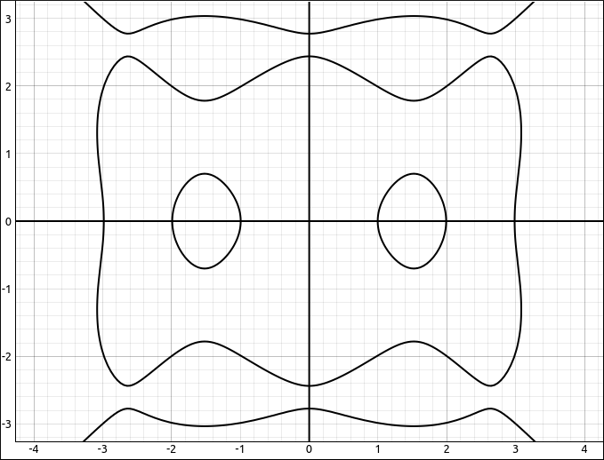
\(- y^{2} \left(y^{2} - 9\right) \left(y^{2} - 4\right) + \left(x^{2} - 9\right) \left(x^{2} - 4\right) \left(x^{2} - 1\right) = 0\)#
If we find \(\frac{dy}{dx}\) with y and x we get,
and \(\frac{dx}{dy}\) with x and y we get,
We can find higher order derivatives here as well, if we find \(\frac{d^2y}{dx^2}\) with y and x and an order of 2 we get,
which simplifies to
Taking this example a little further, if we evaluate the original expression at \(x = 1\) we get
which gives the solutions \(\left[ -3, \ -2, \ 0, \ 2, \ 3\right]\), then evaluating \(\frac{dy}{dx}\) at the point \((1, -2)\) gives us \(3/5\). Hence the slope of the tangent line to this implicit curve at the point \((1, -2)\) is \(3/5\). Hence the tangent line equation is \(y = \frac{3 x}{5} - \frac{13}{5}\) and if we graph this with the curve we see,
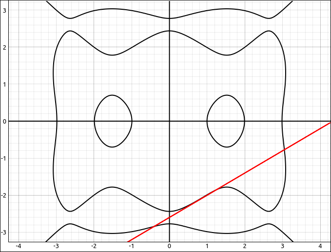
\(- y^{2} \left(y^{2} - 9\right) \left(y^{2} - 4\right) + \left(x^{2} - 9\right) \left(x^{2} - 4\right) \left(x^{2} - 1\right) = 0\) and \(y = \frac{3 x}{5} - \frac{13}{5}\)#
Tangent Line#
This option will allow you to create a tangent line equation to an explicitly defined curve quickly. When this option is invoked a dialog box will appear asking the user to input the variable that will be differentiated with respect to, the point of tangency, if we are working in rectangular or polar coordinates and the form of the output of the tangent line. There is also a variable assumptions selection at the bottom. For more about variable assumptions see the discussion at the bottom of this page. In most cases you will leave the assumptions alone (everything real) but sometimes you may need to change these.
The output type has three options,
Function
y = mx + b: This will give the tangent line asmx + b.General
ax + by + c = 0: This will give the tangent line asax + by + c.Matrix/Linear System: This will give the tangent line as the 1 X 3 matrix
[a b c]which represents the expressionax + by = c.
The form of the output is up to you. Some pros and cons. If you are graphing these then either function or matrix form would be best. The general form uses the implicit expression graphing system which requires many more calculations. If the curve has several places where there are vertical tangents then either the general or matrix forms would be better since at these spots the slope is undefined and hence the m in mx + b is undefined. So for graphing the matrix form is probably the best but it is the least human readable of the three.
We will look at a couple examples.
Input the expression, x^3 - 5*x^2 + 4*x + 1, that is, \(x^{3} - 5 x^{2} + 4 x + 1\). Click and drag it over to the 2-D graph and we get (with a little zooming and moving),
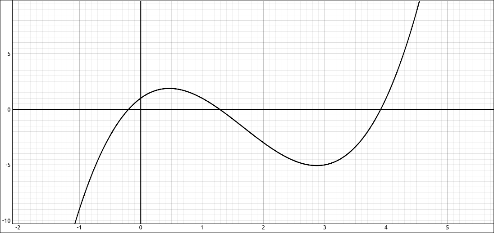
\(y = x^{3} - 5 x^{2} + 4 x + 1\)#
Select Calculus > Tangent Line, use 1 for the point of tangency, rectangular coordinates, and Function y = mx + b for the output type. This gives us \(4 - 3 x\), graph this as well by clicking and dragging it to the graph and see.
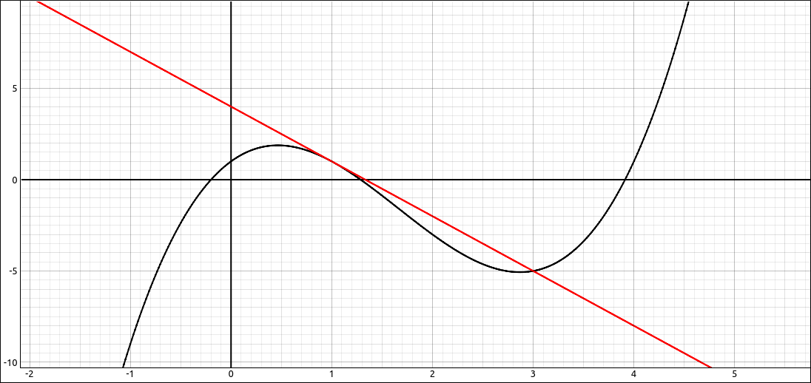
\(y = x^{3} - 5 x^{2} + 4 x + 1\) and \(y = 4 - 3 x\)#
I we had selected the general form output we would have gotten, \(3 x + y - 4\) and if we would have selected the matrix form output we would have gotten, \(\left[\begin{array}{ccc}-3 & -1 & -4\end{array}\right]\). As you can see these are all equivalent. Furthermore, you can click and drag them to the 2-D graphics view and you will get the same lines.
Lets take this a little further. Do another tangent line but this time put in a for the point of tangency. If we use function output we get, \(a^{3} - 5 a^{2} + 4 a + \left(- a + x\right) \left(3 a^{2} - 10 a + 4\right) + 1\). If we click and drag this over to the graph we get the tangent line and we get a slider attached to the constant a.
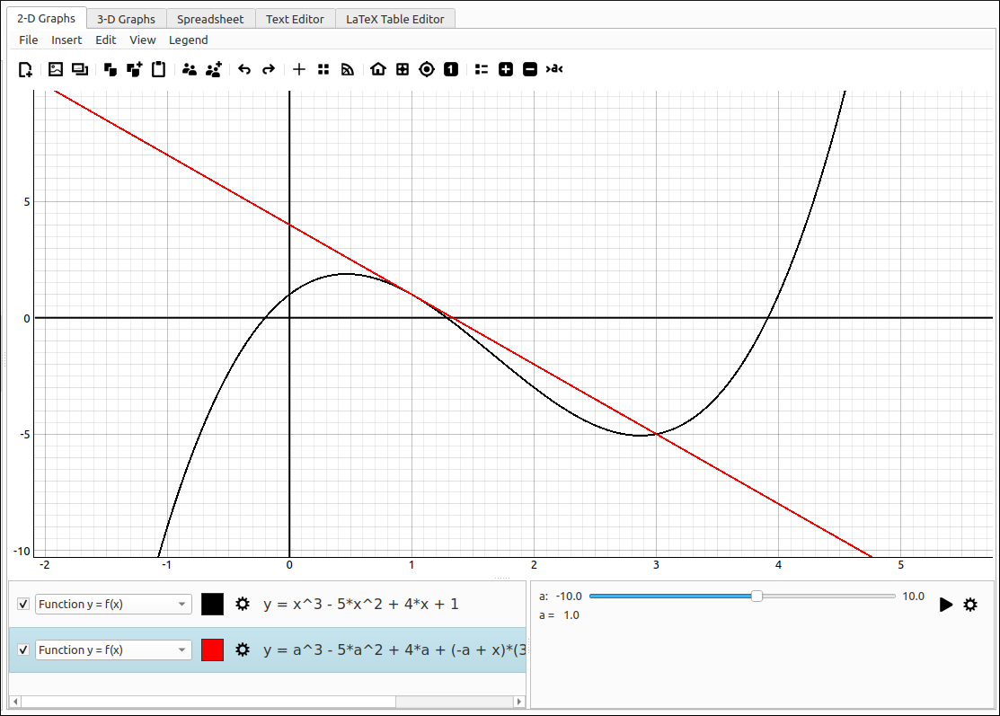
\(y = x^{3} - 5 x^{2} + 4 x + 1\) and General Tangent Line#
If you move the slider you will see the tangent line moving along the curve.
We will do an example of a tangent line to a polar coordinate curve. Input the expression \(\sin{\left(3 t \right)}\), graph it and change the graph type to polar coordinates. Now select tangent line, put the point of tangency as 2 and change to polar coordinates. The result is,
Graphing this along with the curve gives,
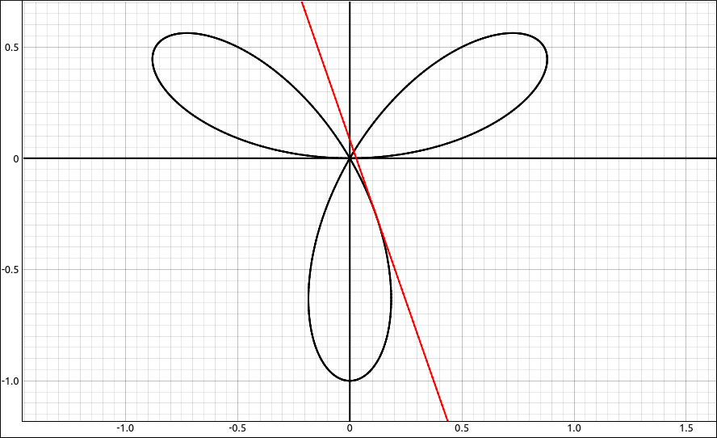
Polar Coordinate Curve and Tangent Line#
Doing the same but using a as the point of tangency we get an equation that will link to the a slider and give a tangent line on the polar curve at the position of the a slider.
Since this curve has several places where there are vertical tangent lines using the matrix form would be better for the graph. This option gives us,
The tangent line calculation also works with parametrically defined curves in both rectangular and polar coordinates.
Input the parametric expression \(\left[ \sin{\left(x \right)}, \ \cos{\left(3 x \right)}\right]\), with the syntax, [sin(x), cos(3*x)]. Graph this in rectangular coordinates and you will see,
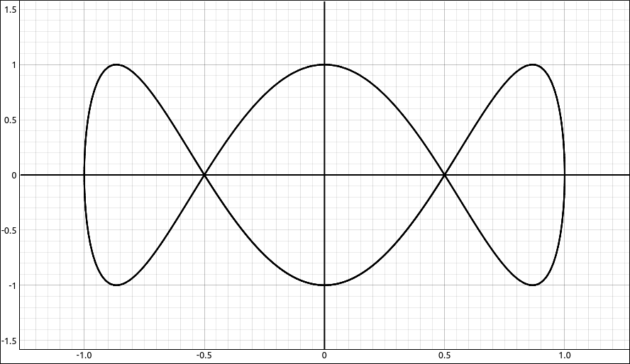
Parametric Curve#
If we create the rectangular coordinate tangent line at 3 we get,
and a visualization of,
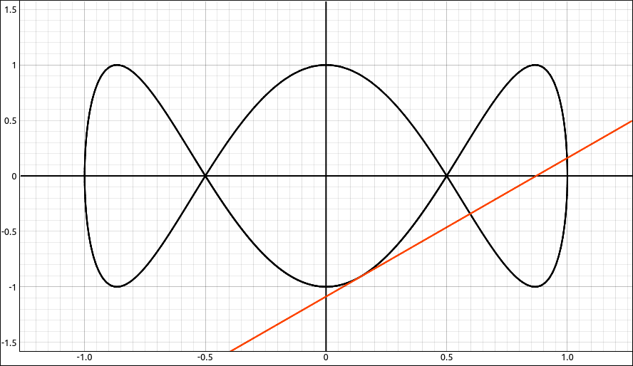
Parametric Curve and Tangent Line#
To do an example of polar coordinate parametric equations we will use the same parametric equations and simply shift to polar coordinates. On the graph hide the tangent line and for the curve select parametric equations in polar coordinates and the graph should change to this,
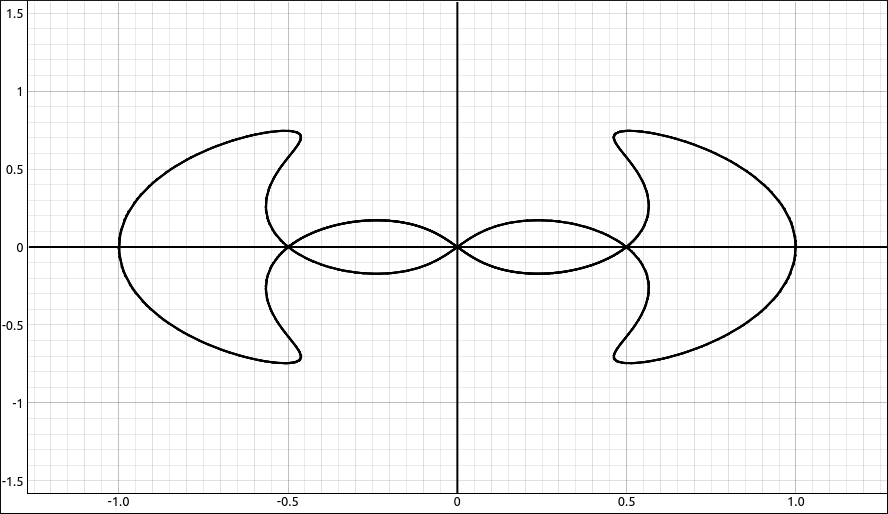
Polar Parametric Curve#
Do a tangent line at 3 again but select polar coordinates this time. The formula will be,
and graphing it with the curve gives us,
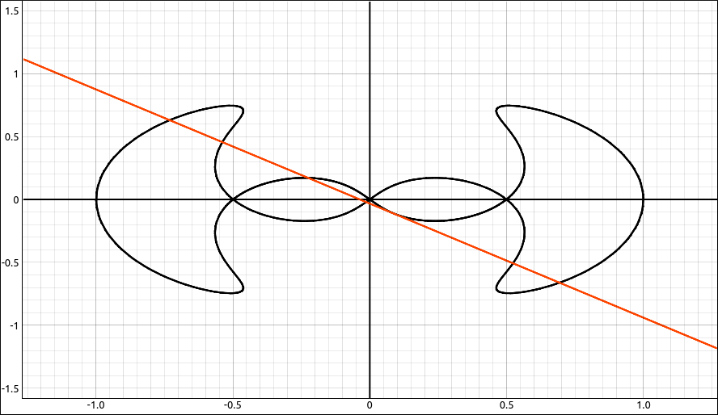
Polar Parametric Curve and Tangent Line#
We can, of course, do the same with a variable point of tangency, like a, to get a tangent line that will follow the curve as the slider is moved.
Maximums and Minimums#
This option will allow you to find absolute or local maximums and minimums of a single variable function on a finite interval. When this option is invoked the following dialog box will appear.
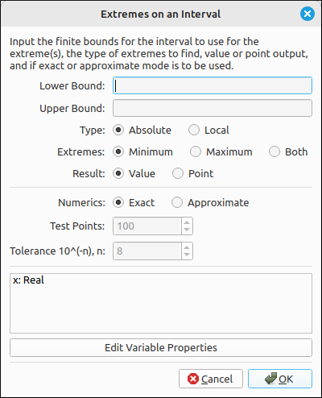
Maximums and Minimums Dialog Box#
The program will automatically find the independent variable and if you try to invoke this on a multi-variable function you will get an error.
The first two inputs are for the lower and upper bounds of the interval of interest. This must be a finite interval and the values must evaluate to real numbers. They can be expressions, such as
pi/3but must evaluate to a number.The Type is simply absolute or local.
The Extremes allow you to select minimums, maximums, or both.
The Result is a selector between values and points. If values are selected then the output is either a single value or list of values for the extremes that are requested. If points are selected, the output will be a list of lists where each of the inner lists is an (x, y) point specifying where the extremes occur.
Numerics is a selection between calculating exact values or approximate values. If the approximate option is selected the test points and tolerance options will be enabled. If exact mode is being used the test points and tolerance are not needed nor are they used.
The Test Points is the number of points the interval is broken up into in order to approximate where the derivative of the function is 0. Hence to find some of the critical points.
The Tolerance is the minimal amount of space between the critical numbers. So if two critical numbers are found that are within the tolerance of each other they are considered the same point. The selector here is the exponent, so an input of 8 means the tolerance is \(10^{-8}\).
There is also a variable assumptions selection at the bottom. For more about variable assumptions see the discussion at the bottom of this page. In most cases you will leave the assumptions alone (everything real) but sometimes you may need to change these. The methods that are involved in calculating maximums and minimums make an overarching assumption that you are working with real numbers in the interval you specified.
For example, say we have the function, \(f(x) = x + 2 \sin{\left(x \right)}\).
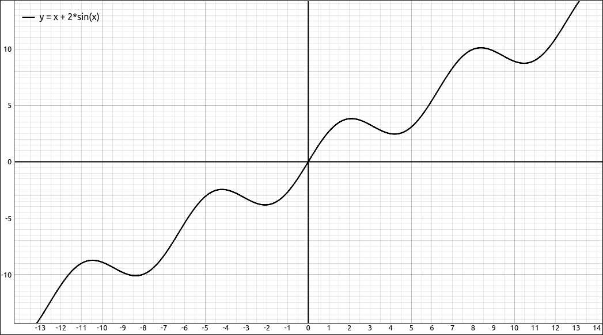
\(f(x) = x + 2 \sin{\left(x \right)}\)#
And we find the value of the absolute maximum of this function on \([-10, 10]\). The lower bound is \(-10\), the upper bound is 10, the type is Absolute, Extremes is Maximum, Result is Value, and Numerics is Exact. The result is \(\sqrt{3} + \frac{8 \pi}{3}\) and if we graph this value it comes in as a horizontal line,
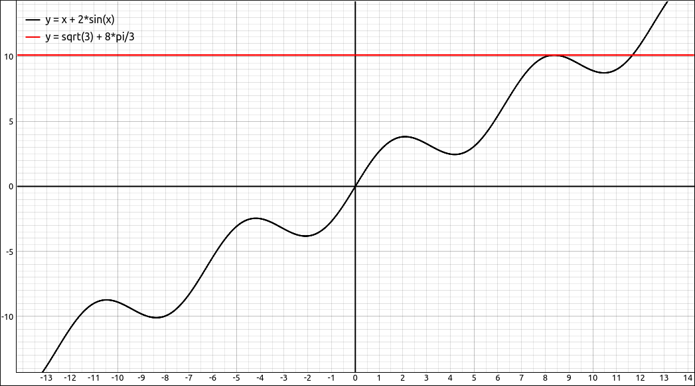
\(f(x) = x + 2 \sin{\left(x \right)}\) and Absolute Maximum#
If we instead find the points of the absolute maximum and minimum of this function on \([-10, 10]\). The lower bound is \(-10\), the upper bound is 10, the type is Absolute, Extremes are Both, Result is Point, and Numerics is Exact. The result is
and if we graph these points we get,
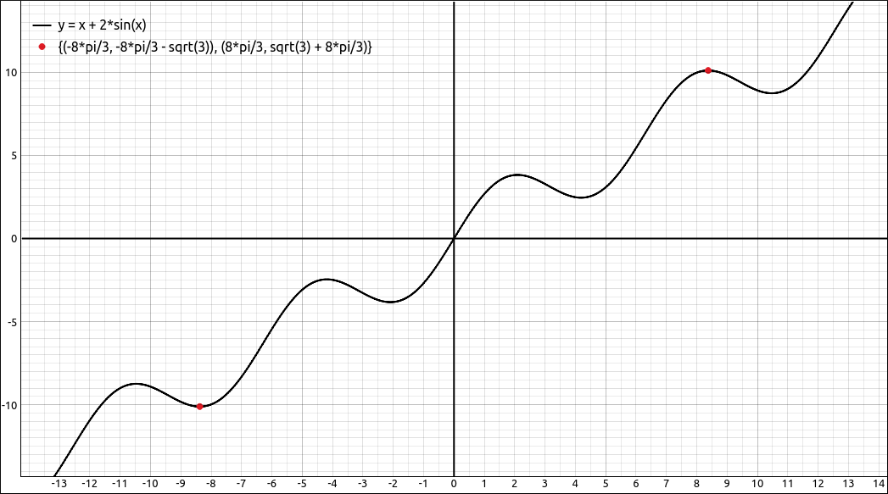
\(f(x) = x + 2 \sin{\left(x \right)}\) and Absolute Maximum Point#
If we instead find the points of the local maximums and minimums of this function on \([-10, 10]\). The lower bound is \(-10\), the upper bound is 10, the type is Local, Extremes are Both, Result is Point, and Numerics is Exact. The result is
and if we graph these points we get,
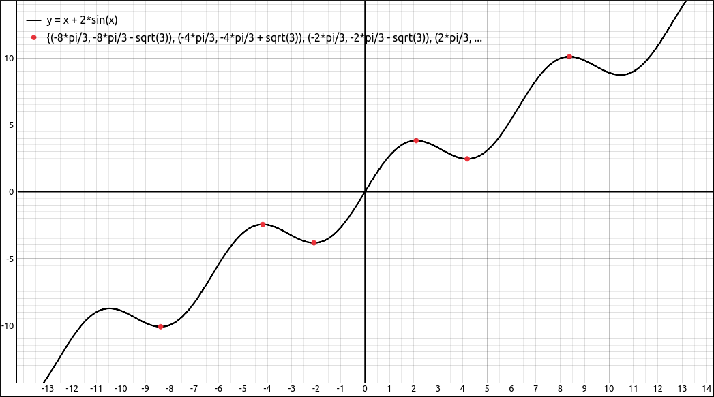
\(f(x) = x + 2 \sin{\left(x \right)}\) and Local Extremes#
If you each of the above examples using approximate mode you will get the same solutions except in approximate form.
Let’s do another example that is a little more complex. Consider the function, \(f(x) = x^{2} + 5 x \sin{\left(x \right)}\).
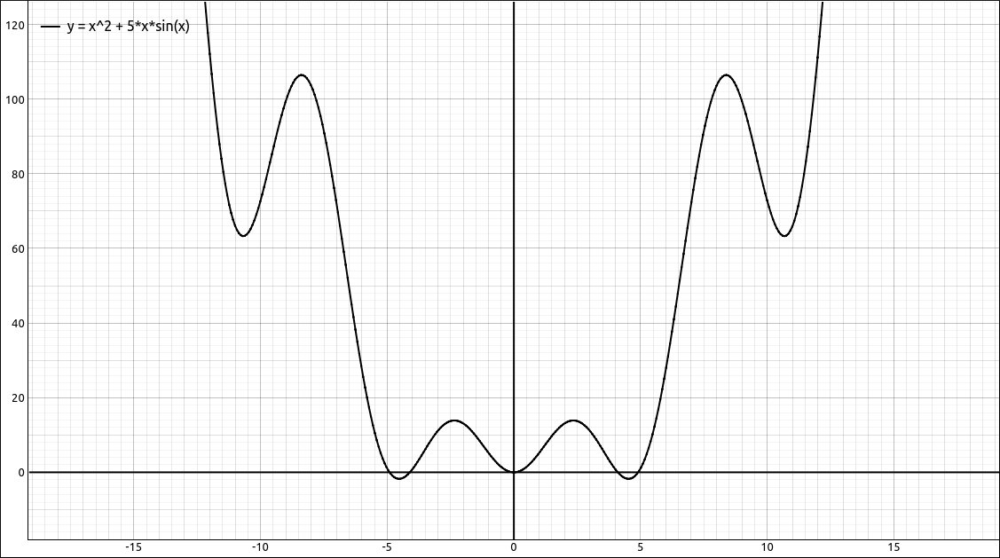
\(f(x) = x^{2} + 5 x \sin{\left(x \right)}\)#
If we try to find all the local maximums and minimums on the interval \([-12, 12]\) we will get an error, which simply means that the program could not find the exact solutions. In the process it would need to find exact solutions to \(5 x \cos{\left(x \right)} + 2 x + 5 \sin{\left(x \right)} = 0\) and as you know, when polynomials and trigonometric functions are combined it is in general a difficult equation to solve exactly. So in these cases you can switch to approximation mode for numerical approximations to the extremes.
As for the settings, the lower bound is \(-12\), the upper bound is 12, the type is Local, Extremes are Both, Result is Point, and Numerics is Approximate. The result is
Graphing these along with the curve gives,
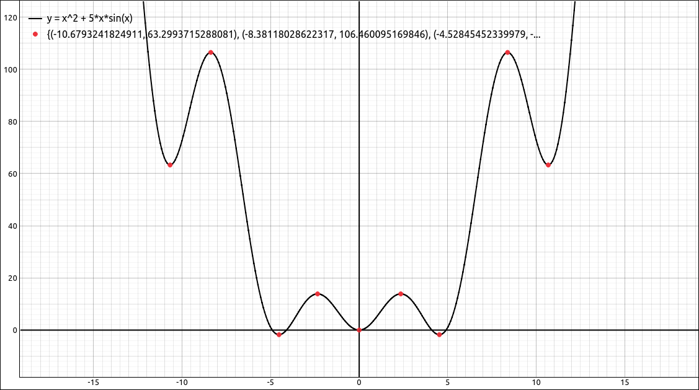
\(f(x) = x^{2} + 5 x \sin{\left(x \right)}\) and Local Extremes#
Note
A few notes about the maximum and minimum calculations.
Exact mode will, of course, produce exact solutions but the methods involved are more difficult and will take more time. In addition, if the program cannot produce exact solutions it will return an error.
If exact mode does fail there is a good chance that the approximate mode will be successful.
Approximate mode does use numeric approximations and, in any case, when using numeric methods there is a possibility that solutions may be missed.
This option works fairly well at skipping isolated singularities. For example, with
on the interval \([-3, 3]\), looking for exact local extrema, it handles \(x = -1\) and \(x = 1\) as it should and returns,
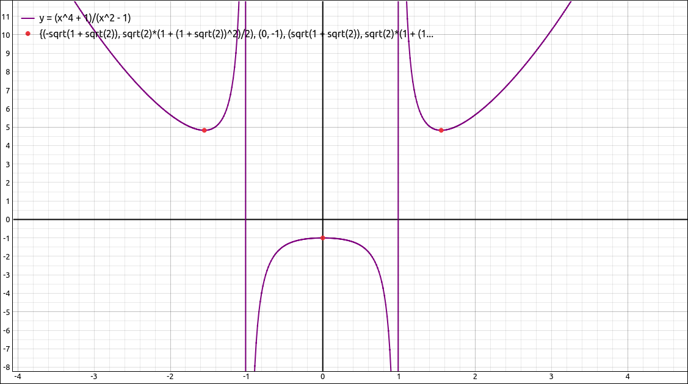
Exact Local Extremes#
For functions that do not have isolated singularities, for example, \(f(x) = \ln(\sin(x))\) it is better to restrict the intervals to sections that are continuous.
In exact mode there are times that the output may look a bit messy, in many cases you can select
Algebra > Approximateto get an approximation to the values and not need to redo the maximum/minimum process in approximate mode. For example, with the function,
on the interval \([-3, 3]\), looking for exact local extrema, we get,
which approximates to
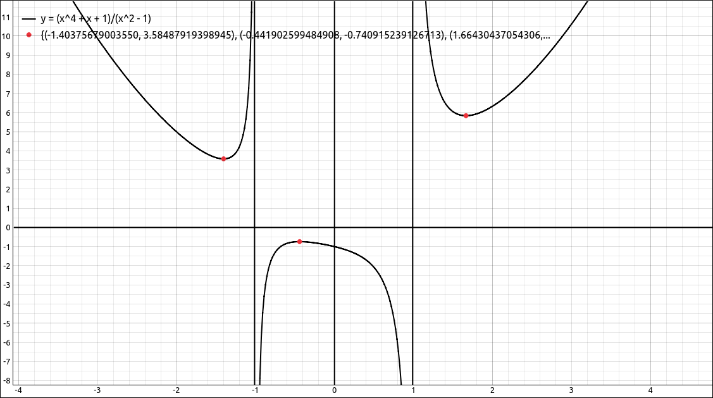
Approximate Local Extremes#
Continuous Domain#
This option will open a dialog box asking for the independent variable to use, if the program is to use the entire real line or an interval as the encompassing domain and the bounds for the interval if that is selected. The result is a union of intervals inside the encompassing domain where the function is continuous. While this is not technically the domain of the function, with most functions studied in Calculus the domain and the continuous domain are the same.
For example, if we take the function \(\tan(x)\) on the entire real line the result is,
which is \(\mathbb{R}\) minus the singularities. If we used the same function on the interval \([0, 10]\) we get,
Note
In cases where there are a lot of singularities, such as \(\tan(x)\), it is better to use the entire real line and not a large interval. If there are a lot of intervals in the union the process can be lengthy.
Variable Assumptions#
Assumptions#
Assumptions about variables are essentially what type of number does the variable represent. In most cases in an introductory Calculus sequence you simply assume that all variables represent real numbers, and sometimes complex numbers. The default setting for variables is as a real number except for solving equations where we use complex numbers.
As a classic example, say we input sqrt(x^2) into the CAS, the entry would be displayed as,
If we select Algebra > Simplify, a simplification that makes no assumptions about the variables, the result is still,
But if we use Algebra > Special Simplifications, leave the settings as is, and click OK the result is,
The difference is that the default domain for x in the Special Simplifications dialog was a real number. In the real number system, \(\sqrt{x^{2}} = \left|{x}\right|\) but in the complex number system it is not. For example, \(\sqrt{i^{2}} = -1 \neq \left|{i}\right| = 1\).
Another classic example is in the study of l’Hospital’s Rule. Marquis de l’Hospital published the very first Calculus textbook in 1696, where l’Hospital’s Rule is first seen in print. l’Hospital did not discover this rule, the Swiss mathematician John Bernoulli (1667–1748) is the one who discovered the method. l’Hospital and Bernoulli had an interesting business relationship where l’Hospital purchased the rights to this method, which is why it is named after him and not Bernoulli. In his book l’Hospital wanted to calculate,
which is a \(\frac{0}{0}\) indeterminate form and hence can be attacked using l’Hospital’s Rule. This expression also assumed that \(a > 0\).
If we put this expression into our CAS (-a*(a^2*x)^(1/3) + sqrt(2*a^3*x - x^4))/(a - (a*x^3)^(1/4)), then select Calculus > Limit, when the limit dialog comes up input x for the variable and a for the limit point, and click OK. The result will be,
It should be fairly obvious that this does not work for a being a positive real number since the denominator is clearly 0 in this case. This time when we select Calculus > Limit we will change the data type of a to be a positive real, and leave x alone. This time the result is the correct answer for these assumptions of,
In the vast majority of cases you will not need to do anything with variable assumptions. The reason we incorporated the ability to specify assumptions about the variable data type is that in a few instances (like in the above examples) you may need to tell the program that variable belongs to a more restrictive domain.
Assumptions User Interface#
The variable assumptions user interface will look like one of the two following layouts.

Variable Properties User Interface#
or

Variable Properties Editor User Interface#
If it is the first of these then clicking the Edit Variable Properties button will open a dialog box with the second interface. The second is where the changes are made. In either of these each variable in the expression is listed with the data type we are assuming it belongs. In the second interface you can edit the domain by first selecting the variable from the list and then selecting its type by clicking on it.
The reason we included the first interface was that it was less intimidating and easier to accept as is,which is what the user will do in most cases. As noted above these assumptions do not need to be changed very often.